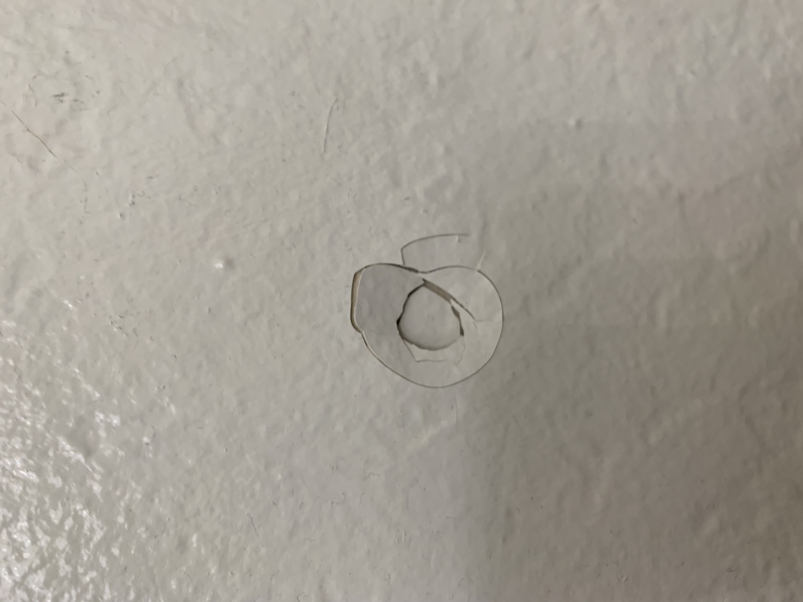

Learning Journal
★ ★ ★ ★ ★Form design is a tricky balancing act between getting the necessary information to complete a task, and keeping the users attention long enough for them to input all the information. Filling out a form is an inherently grueling and uncomfortable process so designers work hard to simplify that process, even if it means making concessions toward the website itself. The main principle underlying effective form design is that less is more; the less unnecessary information you have on the page the less likely you are to lose the user, the less prompts you have the user fill out the less likely you are to lose the user. The user should be aware of their progress in filling out the form and the information the user must input should be made clear. In essence, design for the lowest demographic so everyone has a good time filling out your form.
Modal Design
Modals can be a great design tool when utilized effectively but doing so while retaining the goodwill of your audience can be a tricky endeavor. Modals inherently take control away from the user; they functionally pop up out of nowhere and surprise the user, the key therefore to effective modal design is to make sure the user feels as in control as possible. Modals should be relatively small and succinct with a clear exit strategy. They should be used only when information is needed from the user and should remain as unobtrusive as possible. It is important that a modal shows up as a result of the user’s actions as this makes it feel more like an integrated part of the webpage and less like an interruption of the viewer’s experience.
Visual Thinking Skills
The article " Search The Learning Network Search 10 Intriguing Photographs to Teach Close Reading and Visual Thinking Skills" by Michael Gonchar discusses the pitfalls in interpreting a picture on face value and how to avoid such traps. The overall thesis of this article is to keep an open mind and to keep asking questions, even when a easy answer is within reach. In my opiniong, the most important of these points that Gonchar brings up is point 3, ask open-ended questions. Posing questions to yourself and to others starts conversations and forces you to engage with a image or piece of art on a deeper level. It is what separates observation from connection.
Visual Thinking Analysis
The photo is an aerial view shot of a colorful central Mexican city. The most interesting parts of the city are the pops of bright color spattered across the cityscape. There's golden yellows, bright pinks, and deep shades of crimson. The most obvious part is how bright and lively the city is, the msot mysterious part is probably the functions of some of the buildings. As a suggestion, I might think about focusing on one part of the picture or even down to one specific building to tighten the visual scope.
This image is interesting because it leaves the viewer with so many questions. How did this come about? Whats the story here? It relates because like the rest of the collection, it features a abnormality in my wall. It also, like the rest, tells a story. My collection illustrates that I am a deeply imaginiative person trying to find meaning even where there may be none. I could potentially adjust some of the colors to make it more in line with the rest of the images.
